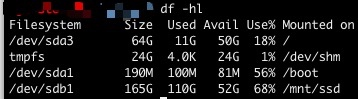

2天前，接到系统报警，用来存储数据库数据的磁盘空间剩余不足10%，于是经过一番删表操作，成功释放了 40G 的空间，关上电脑，安心睡觉。难得今天周六可以在家好好休息，买了老母鸡准备煲个鸡汤犒劳一下自己，此时收到 leader 发来的微信：不是说磁盘空间空出了 40G 吗？现在磁盘都快爆了！！
最怕灯火阑珊时，手机响，心里慌。罢了，鸡汤之后再煲吧~打开电脑，连接线上环境，又是一通删表操作（此处还有其他操作，请不要盲目删表），执行 df -h 命令，奇怪的事情发生了，刚刚明明删除了大概 10G 左右的数据文件，为啥磁盘占用量只减少了 2G 左右，玩呢吧。。。。。。
那么问题来了
文件已经删除了，到底哪里出了问题，竟然把我的磁盘空间都吃满了呢？
使用 df -h 命令查看对应路径下的空间占用情况，得到如图1-1所示的结果：

图1-1
这个结果看起来，磁盘分分钟就要爆了呀！！既然如此，那再看看到底是那个文件夹中的文件最占空间吧。执行 du --max-depth=1 -h命令，得到如图1-2所示的结果：

图1-2
那么问题来了，这个结果看起来，该路径下的磁盘占用量只有 109G，相比于上面查询的 152G，那 43G 去哪里了呢？为什么
df -h 命令查出来的结果和 du -h命令查出来的结果不一样呢？
du命令和df命令区别
du命令工作原理
du，disk usage,是通过搜索文件来计算每个文件的大小然后累加，du能看到的文件只是一些当前存在的，没有被删除的。他计算的大小就是当前他认为存在的所有文件大小的累加和。它的数据是基于文件获取的，所以有很大的灵活性，不一定非要针对一个分区，可以跨越多个分区操作。如果针对的目录中文件很多，du速度就会很慢。
df命令工作原理
df，disk free，通过文件系统来快速获取空间大小的信息，它的数据是基于分区元数据的，所以只能针对整个分区。由于df直接读取超级块，所以运行速度不受文件多少影响。
当我们删除一个文件的时候，这个文件不是马上就在文件系统当中消失了，而是暂时消失了，当所有程序都不用时，才会根据OS的规则释放掉已经删除的文件， df记录的是通过文件系统获取到的文件的大小，他比du强的地方就是能够看到已经删除的文件，而且计算大小的时候，把这一部分的空间也加上了，更精确了。
怎么办？
了解了du和df命令的工作原理，再结合之前释放空间时的操作，原因就找到了：执行表删除操作的时候，仍然有进程在使用对应的文件。
找到仍在使用已删除文件的进程
执行lsof | grep deleted命令，查找相应的进程，结果如图1-3所示（这里只截取一部分）：

图1-3
在对应列表中，找到被自己删除的文件，kill 掉相应进程就可以了。
结果验证
再次执行 df -h 命令，可以看到如图 1-4所示的结果：

图1-4
至此，被偷走的磁盘空间就回来了。撒花~~
知识点扩展
尽量避免df和dh出现差距
工作中，可以通过以下方法避免因为文件删除导致磁盘空间不能正常释放的问题：
- 以清空文件的方式代替删除文件
- 对于经常发生删除问题的文件，以改名、清空、删除的顺序操作
- 有些命令也会间接执行删除文件操作，在执行此类命令的时候，为了避免删除问题，建议先确认有没有进程打开相应文件
不是所有时候都可以直接 kill
kill进程虽然简单，但也是特别粗暴的方式，执行该操作前，应该确认确定不会对运行中的进程造成影响时使用。有些应用程序对这种方式支持的并不好，当一个正在使用的文件被截断可能会引发不可预知的问题。
如果觉得直接 kill 进程比较麻烦或者不可操作，可以尝试以下操作：
- 停掉使用这个文件的应用，让 os 自动回收磁盘空间
- unmount一下文件系统
- 重启系统
lsof 命令
lsof 全名 list opened files，即列举系统中已经被打开的文件。
lsof 命令通常的输出格式为：
| COMMAND | PID | USER | FD | TYPE | DEVICE | SIZE | NODE | NAME |
|---|---|---|---|---|---|---|---|---|
| 默认以9个字符长度显示的命令名称。可使用+c参数指定显示的宽度，若+c后跟的参数为零，则显示命令的全名 | 进程ID号 | 命令的执行UID或系统中登陆的用户名称。默认显示为用户名，当使用-l参数时，可显示UID。 | 文件的File Descriptor number | 文件类型 | 使用character special、block special表示的设备号 | 文件的大小 | 本地文件的node码 | 挂载点和文件的全路径（链接会被解析为实际路径），或者连接双方的地址和端口、状态等 |